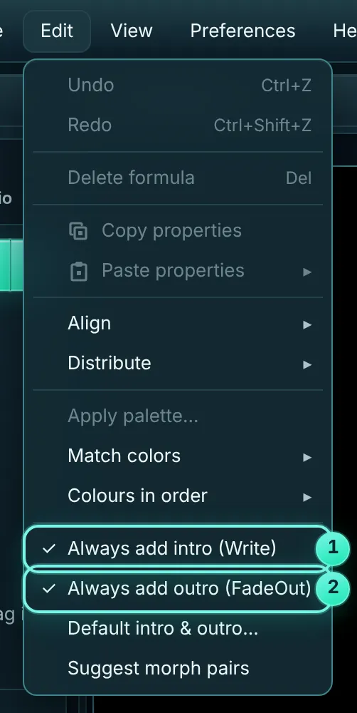
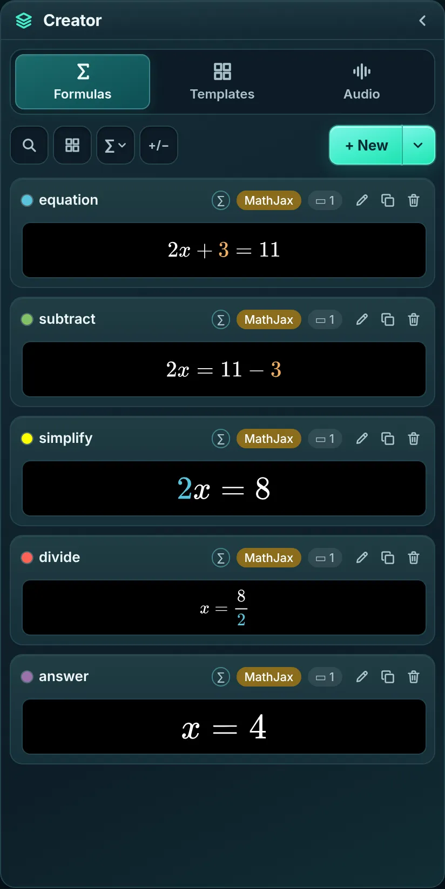
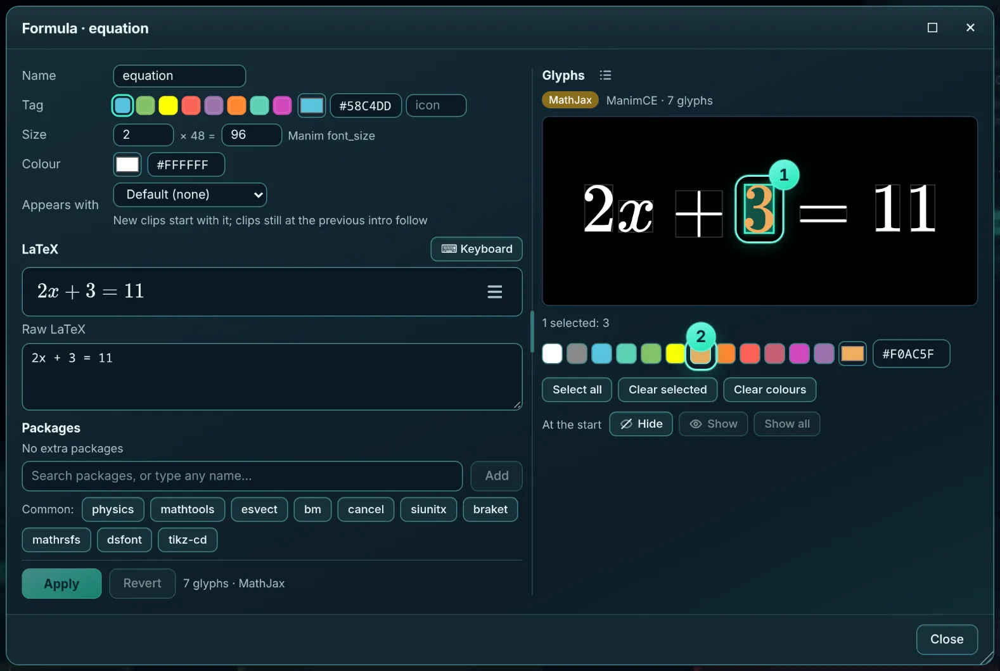
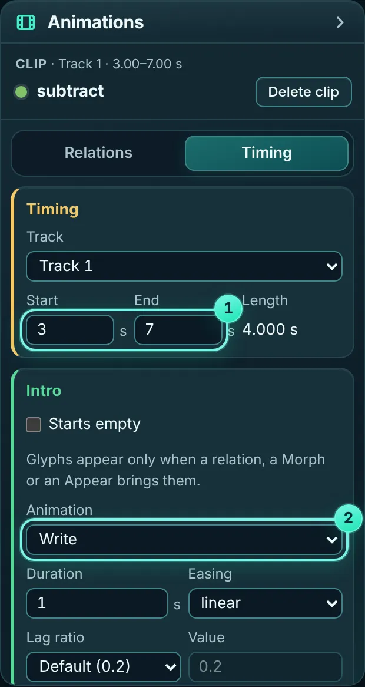
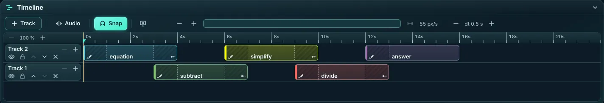
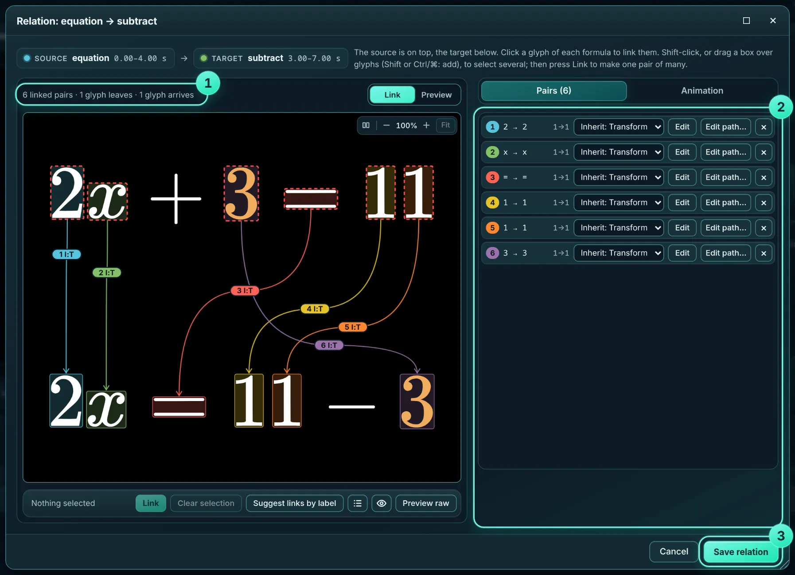
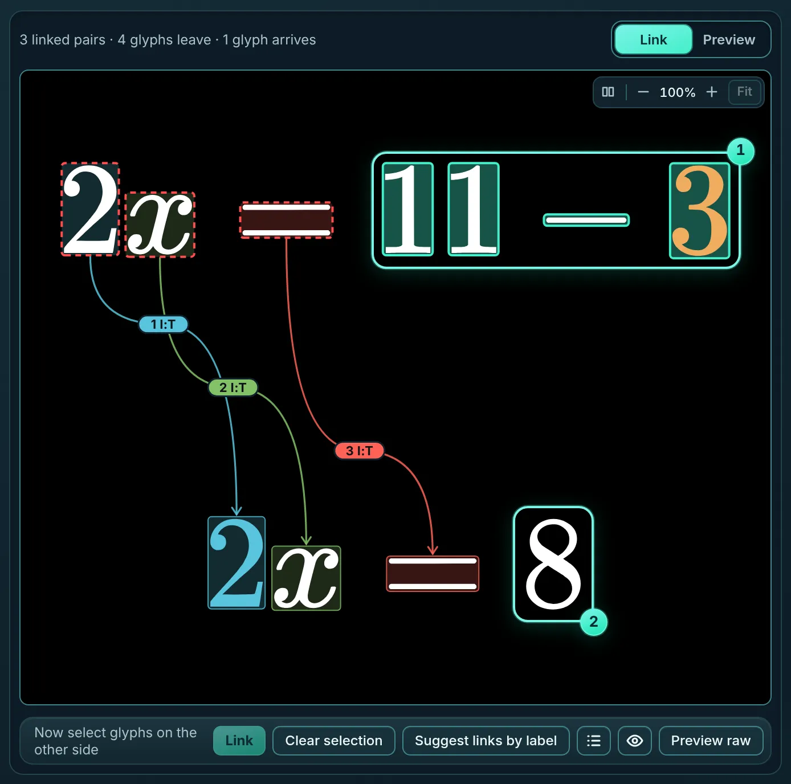
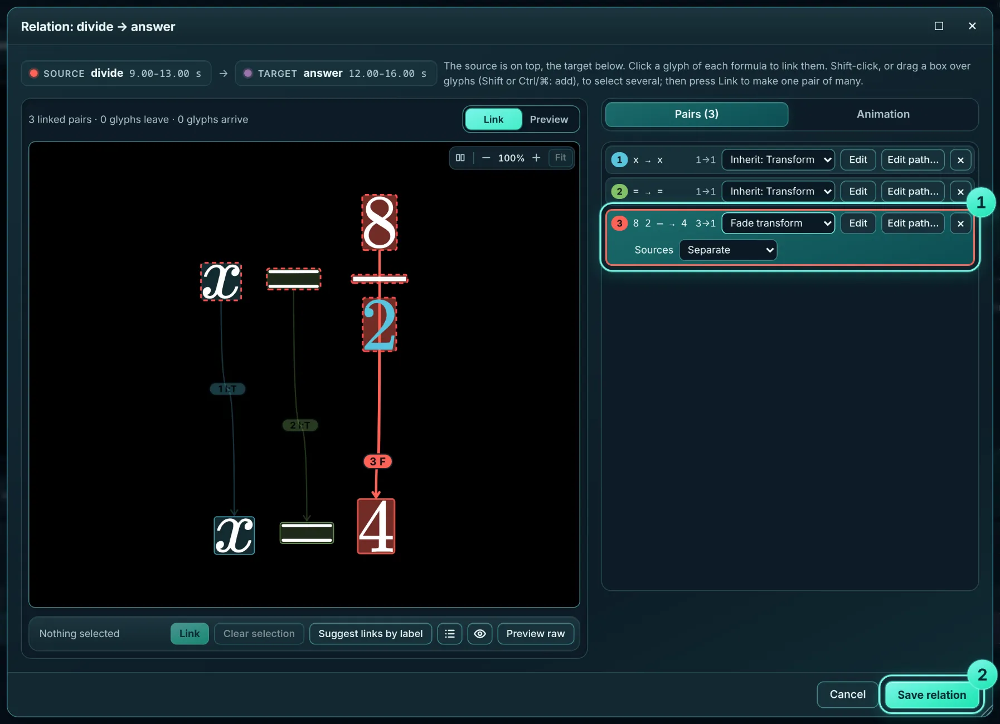

Solving a linear equation
Make the board of a maths lesson: 2x + 3 = 11 is solved in four moves, and
each move is a transformation. The 3 that crosses the equals sign is gold, so the
eye follows it. You write five formulas, place their clips, relate them in pairs and export the
scene.
What you will make
Sixteen seconds of algebra. The first formula writes itself in. Each formula stays long enough to
read, and then turns into the next: the 3 crosses the equals sign and the plus becomes
a minus, 11 − 3 collapses into 8, the 2 drops under the
8, and the fraction becomes 4.
Along the way you meet the moves that every animation of this kind repeats:
- writing formulas and naming them;
- colouring a glyph, so a viewer can follow it;
- placing clips on two tracks, each overlapping the next;
- relating two clips by label, and linking glyphs by hand where labels cannot;
- choosing how a group of glyphs becomes one (Fade transform);
- exporting the scene for Manim.
It takes about half an hour. It is the work of Your first animation, five times over, so do that one first if you have not.
Before you start
Open the editor with an empty project (File ▸ New). Name it: click
Untitled in the menu bar, type Solving a linear equation and press
Enter. The scene of the export will take that name.
Then tick two preferences in the Edit menu: Always add intro (Write) (1) and Always add outro (FadeOut) (2). From then on every new clip starts with a Write and ends with a FadeOut, so you do not have to give them one by one.

These are the five formulas. Each has a name, which becomes a Python variable in the export: a name takes letters, digits and underscores, and does not start with a digit.
| Name | LaTeX | What happens to it |
|---|---|---|
equation | 2x + 3 = 11 | The equation to solve. |
subtract | 2x = 11 - 3 | The 3 crosses the equals sign, and the plus becomes a minus. |
simplify | 2x = 8 | 11 − 3 is 8. |
divide | x = \frac{8}{2} | Both sides are divided by 2: the 2 drops under the 8. |
answer | x = 4 | 8 over 2 is 4. |
If you want to skip a part, this project holds the work of the first four steps: the formulas, the colours and the clips, with nothing related yet. Open it with File ▸ Open…: press Other file… in the dialog and pick the downloaded file (Projects and files explains the dialog). Then go on from step 5.
Step by step
1. Write the five formulas
For each formula in the table:
When the five are written, the Creator lists them. Its list scrolls; this picture was taken in a taller window to show them all.

2. Colour the glyphs that travel
The 3 changes sides in the first move, and the 2 changes place in the third.
Colour them, and the eye can follow them. The glyph view of the formula editor does it.

Colour three more glyphs the same way. A glyph colour belongs to the formula, so every clip of the formula shows it.
| Formula | Glyph | Colour |
|---|---|---|
equation | the 3 | gold |
subtract | the 3, the last glyph | gold |
simplify | the 2, the first glyph | blue |
divide | the 2, under the bar | blue |
Colouring glyphs and objects has the other ways to colour: the hex field, colours in order, and copying a sequence of colours.
3. Put the clips on the timeline
Drag each card from the Creator onto a track. Alternate the two tracks, and start each clip three seconds after the one before. The timeline snaps clips to its ticks, half a second apart, so a drop near a time lands on it.
| Formula | Track | Drop it at |
|---|---|---|
equation | Track 2 | 0 s |
subtract | Track 1 | 3 s |
simplify | Track 2 | 6 s |
divide | Track 1 | 9 s |
answer | Track 2 | 12 s |
The timeline is wider than its panel. Press the key that shows the whole timeline, in its toolbar, to see every clip. Each clip starts with a Write and ends with a FadeOut, from the two preferences you ticked.
4. Give each formula time
Every clip is three seconds long, so clips that start three seconds apart only touch, and a relation needs them to overlap. Lengthen each clip by one second: select it, open the Timing tab of the Animations panel, type the new End (1) and press Enter. Or drag the right edge of the clip.
| Formula | End |
|---|---|
equation | 4 |
subtract | 7 |
simplify | 10 |
divide | 13 |
answer | 16 |

Each clip now overlaps the next by a second, and a formula stays on screen, still, for two seconds
between its arrival and its departure. Last, let the answer stay: select the clip of
answer, scroll the panel down to its Outro section, and choose
None (disappear) as the Animation.

5. Relate the formulas
Relate each formula to the next: four relations. For each pair of neighbours, do what you did in your first animation. Hold Shift, click the port of the first clip, click the second clip, press Suggest links by label and Accept all, and press Save relation. The first pair needs nothing else.
equation to subtract. The glyphs that are the same symbol are
linked: 2, x, =, 3 and the two 1s.
The + has no partner and leaves, and the − arrives.

subtract to simplify. Suggesting links by label links the
2, the x and the =. The right side is left: nothing in
11 − 3 is the same symbol as 8. Link it by hand. Click the first
1 of the top formula, Shift-click the second 1, the − and the
3, then click the 8 of the bottom one. The four glyphs are one pair.
In the list of pairs, set the style of that pair to Fade transform, so that they
fade into the 8. Press Save relation.

8 (2) makes the pair.simplify to divide. By label again: the 2 goes
under the 8, and the x, the = and the 8 go to their
places. The fraction bar has no partner, so it arrives with the intro of divide.
divide to answer. The x and the = are
linked by label. Link the fraction by hand: click the 8, Shift-click the
2 and the bar, then click the 4, and set the style of the pair to
Fade transform. Press Save relation.

6. Play it
Move the playhead to the start with Home and press Space. The first formula writes itself in; each next formula takes shape as the glyphs of the one before travel into it, and the glyphs with no partner are written in. If a move is too quick, select its relation by clicking its band on the timeline and make its Duration longer in the Animations panel; the clips must then overlap by that much (Transforming one formula into another says how the window works).
7. Export it
Choose Export ▸ Python — ManimCE…. The scene is named after your project:
SolvingALinearEquation. Press Download SolvingALinearEquation.py.
The dialog is the one of your first animation, and
Exporting explains its options.
Run it from the folder of the file, with the command at the top of the file:
manim -r 1920,1080 --fps 60 SolvingALinearEquation.py SolvingALinearEquationThat renders at 1920×1080 and 60 frames a second. For a quick look, run
manim -ql -p SolvingALinearEquation.py SolvingALinearEquation instead: -ql renders
at 854×480 and 15 frames a second, and -p plays the video when it is done. Leave out
-r and --fps, which would override -ql.
The result
This is what ManimCE renders from the exported scene with -ql, the quick low-quality
render (854×480 at 15 frames a second):
And this is the Python the editor exports, for both libraries. It is plain Manim: one
MathTex per formula, then a self.play(…) per step of the timeline.
Open the project in the editor, change it, and export again:
Try changing it
- Solve another equation: write five new formulas, for
3x - 4 = 11say, and follow the same steps. - Make a transformation slower: select its band and lengthen its Duration, or change its Easing.
- Line up the equals signs of the five formulas with Align by symbol, so that the sign stays still while the rest moves.
- Make the next tutorial: The Pythagorean theorem, in colour.